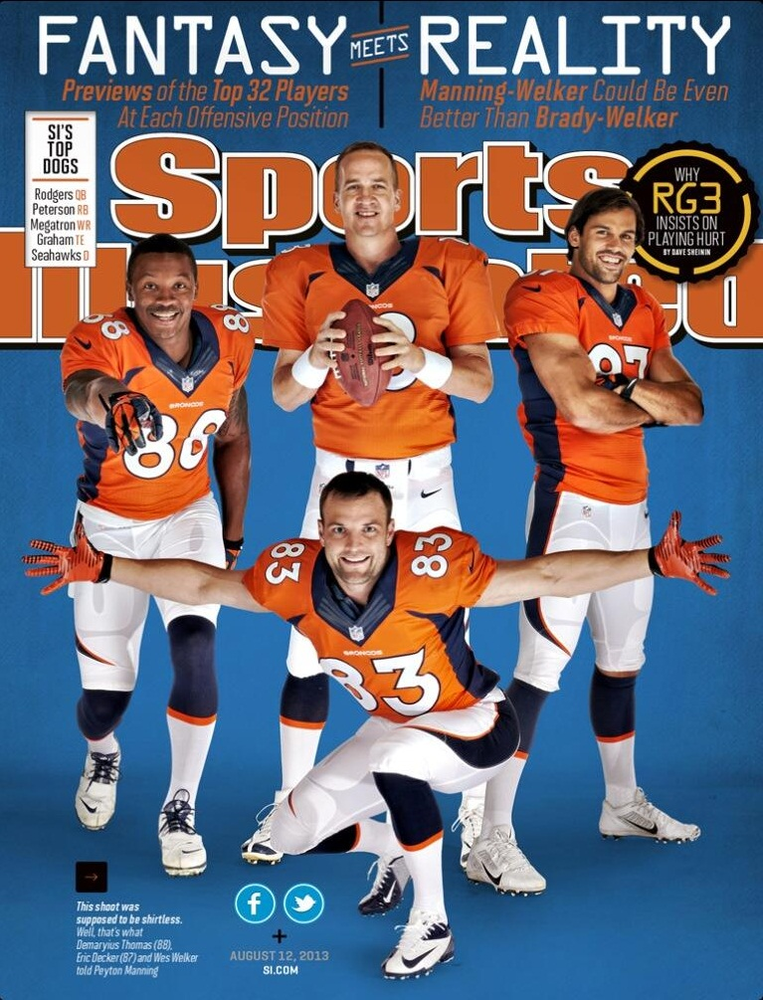

Sports Media and Society
As a society, we live and breathe sports.
Since the evolution of sports coverage in magazines up to today's Twitter world, Americans have made sports a large part of their lives, more importantly, sports media. While most think of ESPN when thinking about the subject, a multitude of mediums exist such as blogs, social media, and advertisements. The sports industry and its relationship with the media is a fascinating one to explore. Sports media has four major functions: news, storytelling, opinion/analysis, and entertainment.
Forms
Sports media takes place in many forms-
- Newspaper- offers analysis and opinion
- Radio- play-by-play, fan voice, entertainment talk
- TV- everything, games, highlights, opinions, analysis, news
- magazines- depth, originality, relevance, personal stories
- Photography- action, still
- Books- point of view, depth, insight
- Digital- web sites, bloggers, user/fan boards, podcasts
- Team Media- own media of all forms (news, features) with point of view and access
- Social Media- athletes and teams have a voice
Many are familiar with the basics of media coverage such as the First Amendment, libel, and slander. Sports media coverage differs from other media coverage because a conflict of interest exists.
The conflict: Getting the "good stuff" (good material) VS. protecting an organization and message
Below is an interview with Bob Costas discussing the conflict of how sports is covered across various mediums.
In determining what the media decides to cover, sports media members consider both the audience and news values. The audience refers to what you cover and how you cover it. This varies depending on your geography and also your interest (could narrow down by sport/team). News values determine what we cover, and are the characteristics that determine whether and how media organizations cover things. New values include-
- Timeliness- breaking news
- Proximity- local, national, international
- Prominence- prominent athletes get more coverage
- Impact- how much does it affect your audience?
- Uniqueness- differentiation
- Scale- game, play-off, championship, certain sport
- Conflict- arrests, accidents, injuries, fights
- Human Interest- emotion, drama
- Sensationalism
As media professionals, we tell our audiences what's important, so it's critical to understand these foundations.